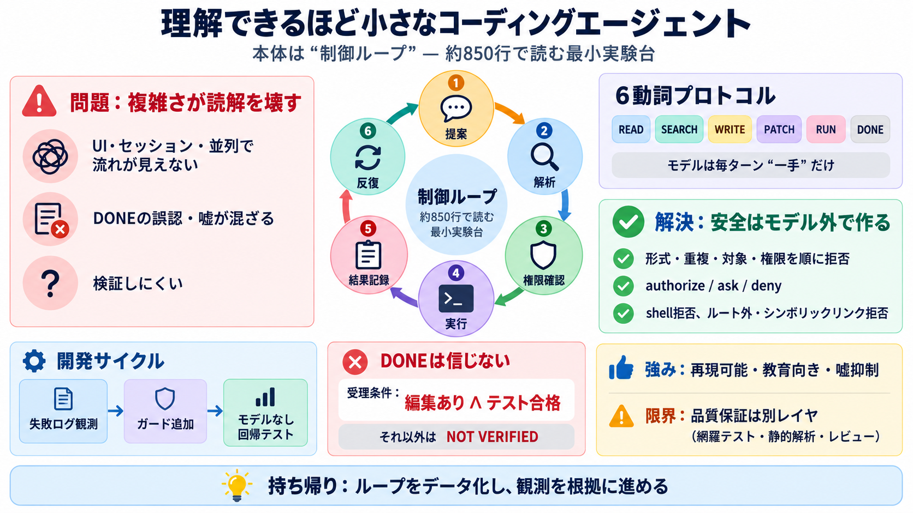

Cover
02 / 12
理解できるほど小さく
AI Tools
#7
コーディングエージェント（自律的にコード修正とテスト実行を行う仕組み）を、
読み通せる最小のループ
として切り出す試みを紹介します。
Key idea / 要点
プロダクト級の多機能を捨て、
“制御ループ”
だけを約850行で見せる。
エージェントはUI・セッション・並列などよりも、反復する制御が本体になる。
Problem
03 / 12
なぜ読まれない？
複雑さが
読解
を壊す
通常のコーディングエージェントは、UI・セッション管理・言語サーバ・多要素の並列などが積み上がり、制御の流れが追えなくなります。
読みにくさ
機能が多い → 重要な判断点が埋もれる。
“何が決め手で次へ進むか”が見えにくい。
検証しにくさ
DONEの誤認や逸脱が起きても気づきにくい。
モデルの言葉を鵜呑みにすると嘘が混ざる。
Metaphor
04 / 12
ループが本体
エージェントは
反復器
記事の見立てはシンプルで、エージェントは結局「提案→解析→権限確認→実行→結果記録→反復」というループでできています。
Mode 1
提案 / Proposal
モデルが1行で行動を返す
Mode 2
制御 / Control
形式・重複・権限・対象をチェック
Mode 3
検証 / Verify
編集とテスト成功の両方を要求
Architecture
05 / 12
6動詞プロトコル
モデルは
一手
だけ
モデルは毎ターン、複雑なJSONではなく、
READ / SEARCH / WRITE / PATCH / RUN / DONE
のようなテキスト命令で“次の1手”を返します。
プロトコル / Protocol
6つの動詞
に固定
parse（解析）や検証（ガード）を失敗しにくくする。
狙い / Why
誤りを局所化する
形式逸脱・繰り返し・未読対象への書き込みなどを機械的に止める。
Process
06 / 12
実行側の順序チェック
指示は
順に拒否
される
実行側は、モデルの指示が正しい形式か、同一指示の繰り返しで詰まっていないか、読んでいないファイルへ書かないか、権限方針に合うかを順に確認します。
検査 / Checks
形式・重複・対象・権限
“モデルの善意”ではなく“実行側ルール”で判定。
結果 / Output
次の判断材料として記録
観測（何を読んだか/何を実行したか）を次ターンへ渡す。
Evidence
07 / 12
嘘DONE対策
DONEは
信じない
記事の核は、DONE（完了）を成功宣言として鵜呑みにせず、
編集が実際に行われ
、かつ
直近の編集後にテストが通った
ときだけ“検証として受理”する点です。
受理条件
編集あり
∧
テスト合格
これ以外は
NOT VERIFIED
で継続。
狙い
“テストしたことにする”事故を止める
モデルの錯誤や誇張を設計で抑制。
Distinction
08 / 12
モデル外で安全を作る
安全は
レイヤ分離
サンドボックスやポリシー（権限制御）を、モデルの判断ではなく“モデル外のロジック”として実装します。
権限制御
authorize（許可）/ ask（確認）/ deny（拒否）
書き込みや危険操作をゲートする。
環境制限
shell 全面拒否（deny）
任意コマンドを避ける。
対象制限
ルート外・シンボリックリンク拒否
ファイル破壊の経路を塞ぐ。
Process
09 / 12
失敗→ガード追加→回帰
観測して
介入
する
開発は「実モデルでの失敗例→必要なガード追加→mlplunitでモデルなしテスト」の順で体系化されます。
Step i
失敗ログの観測
テキストフェンス扱い、同一指示の反復、未読書き込みなど。
Step ii
ガードを機械テストへ
モデルなしでパーサ・ガード・ループを回す。
Comparison
10 / 12
小ささのトレードオフ
強みと
限界
ループを小さくするほど読めて検証しやすい一方、長期タスク（複数ファイル設計変更、依存更新、品質保証の網羅性）をそのまま包摂するわけではありません。
Strengths
再現可能・教育向き・嘘抑制に強い
literate programming（文章とコードの対応）が読みやすさに寄与。
Limitations
品質保証は別レイヤが必要
テスト網羅性・静的解析・レビュー観点などが不足しうる。
Closing
11 / 12
持ち帰るべき設計
ループを
データ化
する
エージェントの本質は“制御ループ”であり、モデルとシステムの境界を最小プロトコルに固定し、実行側ガードと検証条件で信頼性を作ります。
Takeaway / 要点
i) 6動詞で単一行動
ii) DONEは編集＋テストでのみ受理
モデルの言葉を信用するのではなく、観測を根拠に進める。
For next step
iii) 権限制御とサンドボックスをモデル外へ
iv) 失敗→ガード→モデルなし回帰
小さい実験台を起点に、必要な品質レイヤを足していく。
REFERENCES
12 / 12
References
No references found